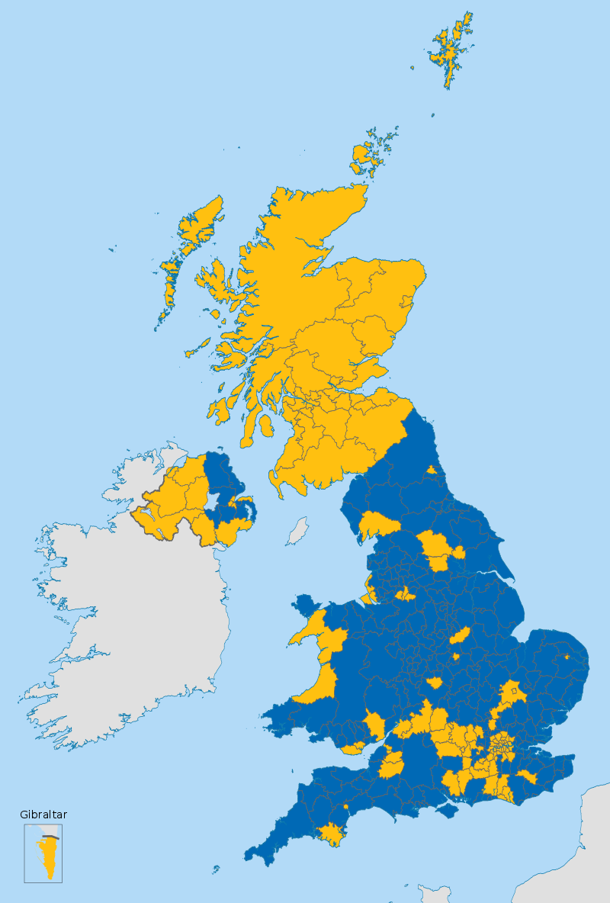

2016英國留去歐盟公投結果票數及比例
17,410,742
脫離歐盟

16,141,241
保留歐盟成員國身分
各區脫離&留下比例
脫離與留下票數比例
51.9 : 48.1
英國留歐地區上的支持程度差異

2016年脫歐公投在英國下議院各選區的投票結果
蘇格蘭、北愛爾蘭、大倫敦為留歐陣營；英格蘭及威爾斯主要為脫歐陣營。另外，英國在歐洲的領土—直布羅陀有高達96％的居民選擇留在歐盟。(黃色代表留歐，藍色代表脫歐)
為什麼蘇格蘭全區皆支持留歐？
英國留歐最大的利益是獲得全歐洲市場，其中包括全歐洲的資本要素以及勞動力要素。因此留歐對資本家，農場主是利多。從蘇格蘭的發展來看，蘇格蘭以農業為主，不只是威士忌酒的重要產地，也是勞力密集型產業，留歐符合其區域利益。
為什麼大倫敦是英格蘭脫歐陣營中支持留歐的地區？
因為留歐對資本家有較多好處，且倫敦作為國際一線大城市，充滿了移民與移工，若離開歐盟不只無法創造更多就業機會，反而可能阻擋人才的流動，影響經濟發展。
英國脫歐公投對直布羅陀的影響？
由於直布羅陀有96%選民選擇留在歐盟，引發西班牙再次對其主權申索主張。西班牙外交部長加西亞·馬加略表示將尋求與英國共治直布羅陀，並最終全權管治直布羅陀。而直布羅陀首席部長費邊·皮卡多隨即否定加西亞的説法，指先前的地方公投已反對共同管治，強調「不存在任何有關直布羅陀主權會談的空間，連會談的會談對話也不可能」。
關鍵人物
脫歐時程大事紀
-
06/23 英國脫歐公投
07/13 梅伊就任 -
03/29 英國啟動里斯本條約第50條
06/19 正式啟動脫歐第一階段談判
12/08 英國與歐盟達成第一階段脫歐協議
12/15 同意啟動脫歐第二階段談判 -
06/20
國會正式批准脫歐法案
07/12
英國公布脫歐白皮書
11/13
英國內閣達成脫歐協議草案 -
03/12 英國脫歐草案再次遭到國會否決
03/21 歐盟同意延長脫歐
03/29 英國脫歐協議三度遭拒
04/05 梅伊再度請求延長脫歐
04/10 歐盟同意延長脫歐時間